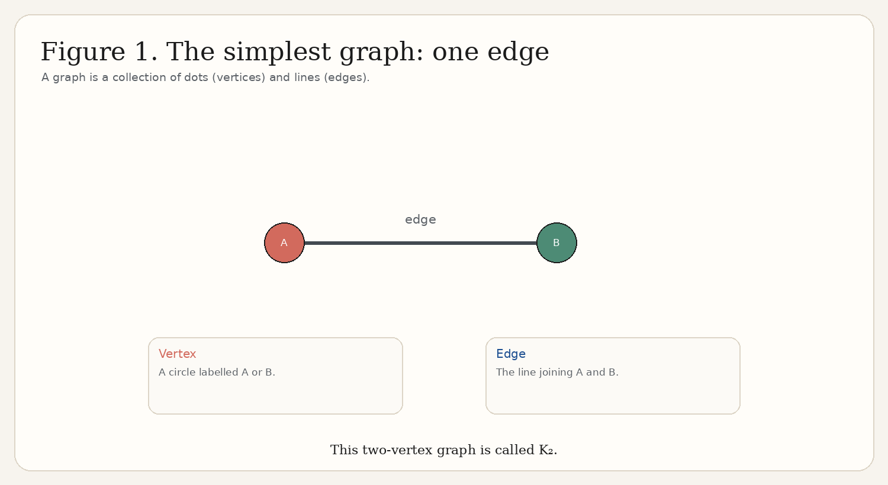
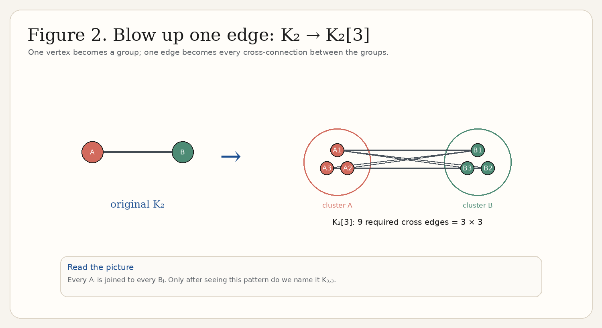
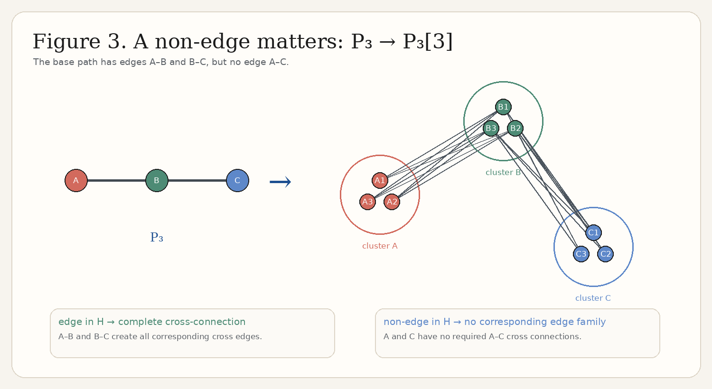
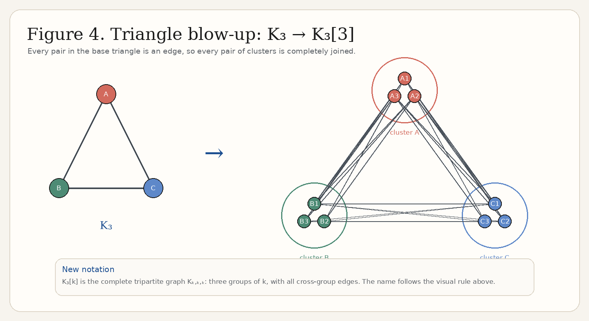
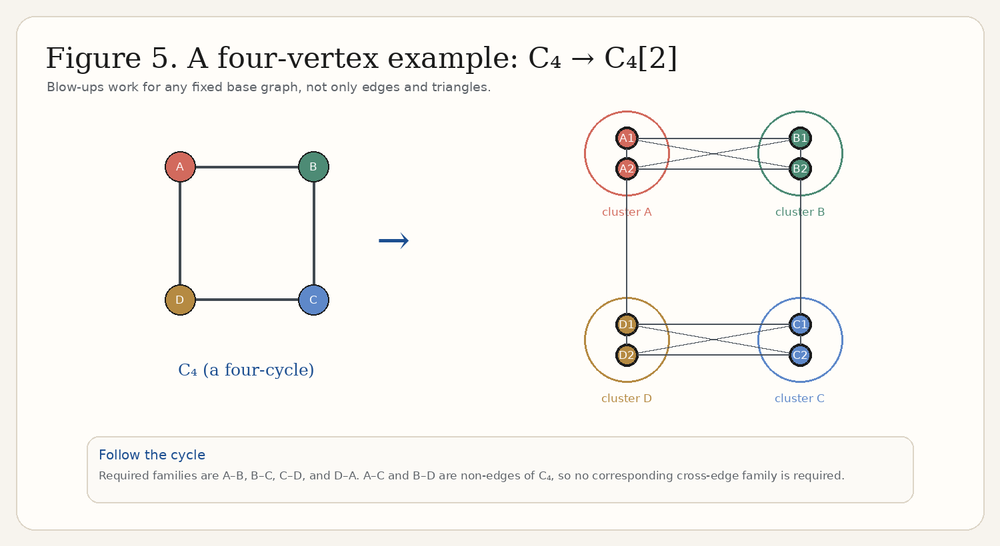
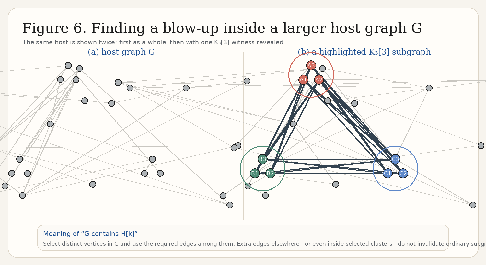
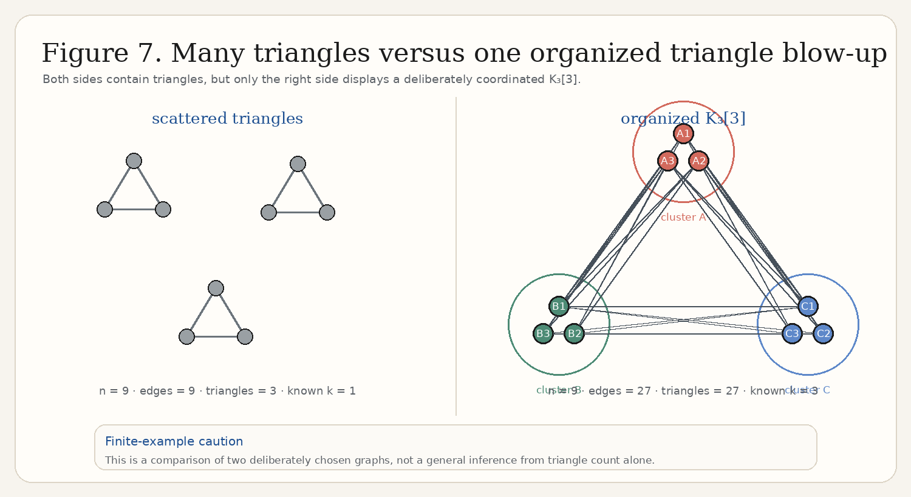
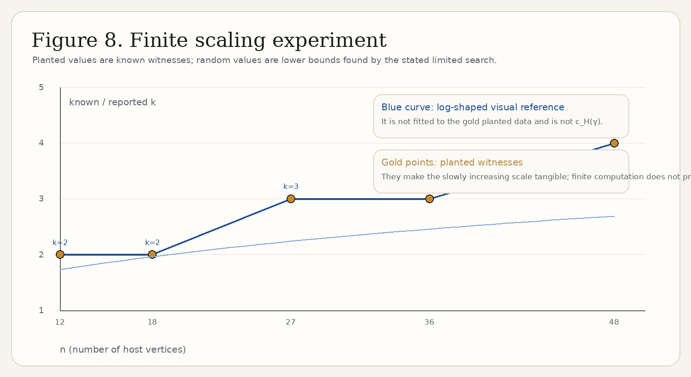

Nikiforov's Graph Blow-Up Theorem
A visual path from one line between two dots to a powerful structural theorem. The destination is striking, but the idea begins simply: replace each vertex of a small graph by a group of vertices, and let the original edges tell the groups how to connect.
Before blow-ups: three graph ideas you need
A graph is a set of vertices together with some edges. Vertices are usually drawn as circles; an edge is a line joining two vertices. A subgraph is a pattern we can find by selecting some vertices and some of the edges of a larger graph.

Blow-up in one sentence
To make $H[k]$, replace every vertex of a base graph $H$ by a cluster of $k$ new vertices, then replace every original edge by all possible edges between its two clusters.
Keep track of which original vertices are joined.
Replace each original vertex by $k$ labelled new vertices.
If $uv$ was an edge, join every vertex in the $u$-cluster to every vertex in the $v$-cluster.
If $uv$ was not an edge, the construction adds no corresponding edge family.
The displayed implication describes required cross-cluster edges. In the abstract construction we add no other edges. Later, when $H[k]$ sits inside a host graph, ordinary subgraph containment allows unused extra host edges.
Example 1: one edge becomes a grid of connections
Start from $K_2$: A is joined to B. In $K_2[3]$, A becomes A1, A2, A3 and B becomes B1, B2, B3. The single old edge A–B commands all nine possible A–B cross-connections.

Example 2: a non-edge matters
Now use the three-vertex path $P_3$: A–B–C. A is not adjacent to C. Its blow-up has complete A–B and B–C families, but no required A–C family. A blow-up is therefore not automatically a complete multipartite graph.

Example 3: triangle blow-up
In a triangle $K_3$, every pair among A, B, C is adjacent. Therefore every pair of its three clusters gets a complete cross-connection. Only now is the notation useful: $K_3[k]$ is the complete tripartite graph $K_{k,k,k}$.

Example 4: a more complex base graph
The same operation works for an arbitrary fixed graph. In the four-cycle $C_4$, only consecutive vertices are adjacent. Its blow-up inherits exactly those four edge families.

What does “G contains H[k]” mean?
First build $H[k]$ abstractly. Then look inside a larger host graph $G$ for distinct vertices that can play its roles. For a $K_3[k]$ witness, the search checks three disjoint groups of $k$ vertices and verifies that every cross-group pair is an edge. It does not reject a witness because $G$ has extra edges inside a chosen group: this is ordinary subgraph containment, not induced-subgraph containment.

Many copies versus organized structure
It is easy to confuse these. A graph may have several individual triangles without supplying three groups that are fully cross-connected. Conversely, a planted $K_3[3]$ contains many triangles because every choice of one A, one B, and one C makes one. The finite comparison below is deliberately illustrative; it is not a theorem relating these two particular counts.

Nikiforov's theorem
Now that the object is visible, here is the formal statement. Let $H$ be a fixed graph on $h$ vertices and let $\gamma>0$. For all sufficiently large $n$, every $n$-vertex graph $G$ with at least $\gamma n^h$ copies of $H$ contains a blow-up $H[k]$ for some
where $c_H(\gamma)>0$ depends only on $H$ and $\gamma$. The result is asymptotic: the threshold implicit in “sufficiently large” may also depend on $H$ and $\gamma$. This page does not claim a numerical value for $c_H(\gamma)$.
Decode the theorem one symbol at a time
the small pattern we care about.
the number of vertices in $H$.
the large host graph being studied.
the number of vertices in $G$.
different occurrences of that pattern in $G$.
the quantitative abundance assumption.
the organized blow-up guaranteed inside $G$.
the number replacing each original vertex.
a positive constant depending on $H$ and γ.
the important growth scale.
What the theorem does not say
It does not say every collection of copies visibly lines up into one blow-up. It does not say the host graph is itself equal to $H[k]$. It does not assert a specific, universal coefficient in front of $\log n$. And finite experiments can exhibit the phenomenon but cannot verify an asymptotic theorem.
Computational experiments
All data were regenerated by generate_blowup_media.py with fixed seeds. A triangle count is exact. For the table, $\widehat\gamma=\text{triangles}/n^3$ is merely a displayed finite normalization; it is not automatically the theorem’s $\gamma$, whose copy-count convention and hypothesis should be kept separate. A reported $k$ is a verified lower bound unless it is a known planted value.
Scenario A — deterministic teaching example
A deliberately constructed $K_3[3]$ checks that the witness criterion recognizes a known structure.
Scenario B — planted structure plus noise
Starting with $K_3[3]$, the script adds reproducible random background edges and vertices. The planted witness remains valid because the required cross edges remain present.
Scenario C — random graph
Fixed-seed samples of $G(n,1/2)$ are used. The script does an exact exhaustive search for $k=2$ and a capped random-triple heuristic for $k=3$; a heuristic failure is never read as nonexistence.
Scenario D — same n, different density
At $n=20$, changing $p$ changes the edge and triangle counts. The reported blow-up size remains a limited-search observation, not a maximum claim.
Scenario E — increasing n / logarithmic scale
These deliberately planted examples provide known witnesses at increasing sizes. The light-blue curve is only a log-shaped visual reference and is explicitly not a fitted $c_H(\gamma)$.
| Scenario | n | Edges | Triangles | $\widehat\gamma$ | Planted k | Largest k reported | Search type / notes |
|---|

Random-graph intuition
A candidate $K_3[k]$ demands all $3k^2$ cross-cluster edges among three chosen groups. In a random graph, asking many specific edges to occur together rapidly becomes restrictive as $k$ grows. This helps make a logarithmic guaranteed scale plausible, but it is intuition—not a proof of the theorem or of its sharpness.
Why finite computation is not a proof
The theorem quantifies over sufficiently large graphs and every graph satisfying its hypothesis. Our examples are small, selected graphs; the $k=3$ random-graph search is capped and heuristic. Their role is to make the definitions, witnesses, and limitations concrete.
Main takeaways
Remember the translation: vertices become clusters, edges become complete cross-connections, and non-edges create no required edge family. Nikiforov’s theorem says that an abundance of one fixed pattern forces one of these organized expansions at a logarithmic scale.